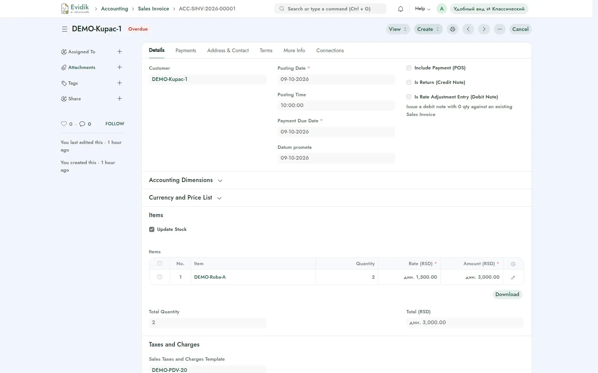
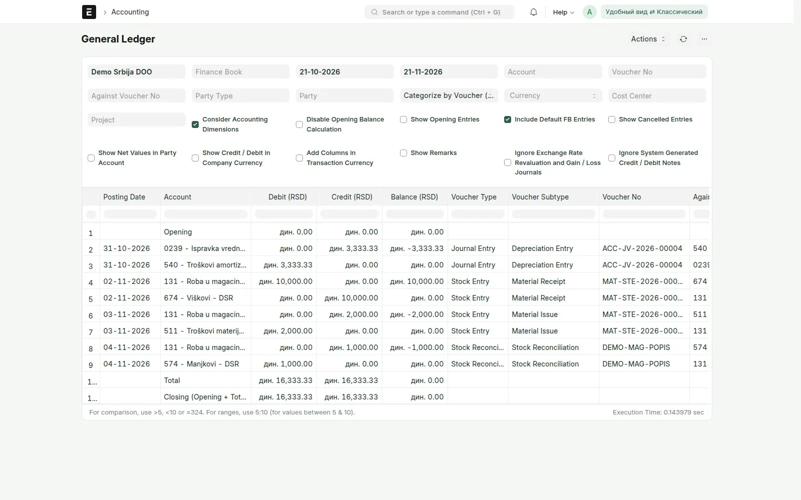
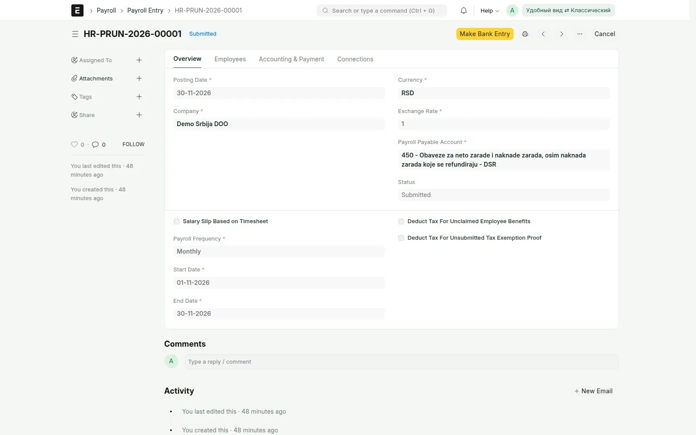
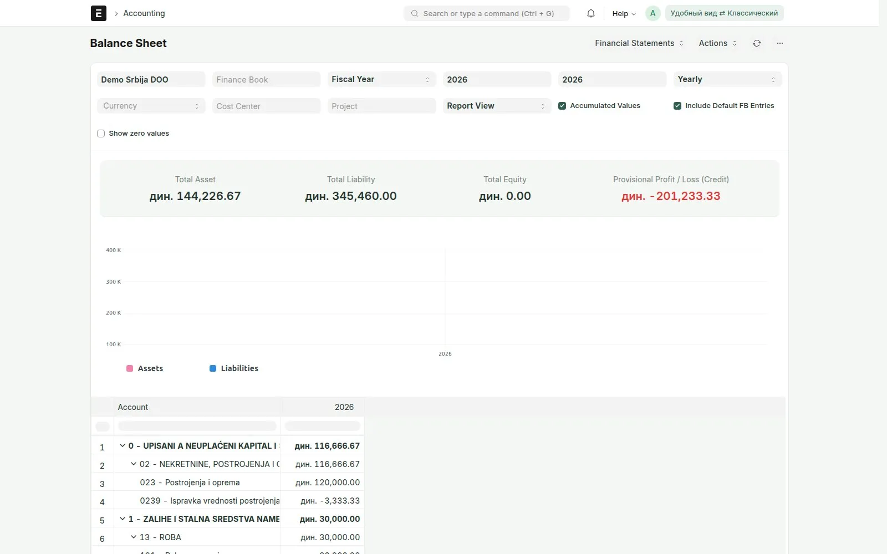

Что Evidik умеет сейчас
Десять возможностей, проверенных на демо-базе. Экраны настоящие, данные демонстрационные.
Рабочий стол «Мой день»
Бухгалтер видит день целиком на одном экране.
- Черновики, просроченные счета, счета к оплате
- Налоговый календарь на год
- Лимиты паушала и ПДВ
План счетов 89/2020
Программа сама настраивает kontni okvir при создании фирмы.
- Классы 0–9 по сербскому правилу
- Остатки по каждому счёту
- Группы сворачиваются и раскрываются

Продажи с ПДВ и SEF
Счёт клиенту с ПДВ 20 % или 10 % и датой prometa.
- Выгрузка в SEF: UBL 2.1 + CIUS-RS
- Проверка схемы перед отправкой
- Возвраты и просроченные счета

Закупки
Входящий счёт поставщика с ПДВ и приходом на склад.
- Номер и дата счёта поставщика
- Приход товара на склад
- Счета к оплате на рабочем столе

Главная книга
Все проводки за период с отбором по счёту и контрагенту.
- Отбор по счёту, партнёру, документу
- Переход в документ из строки
- Остатки на начало и конец

Основные средства
Карточка основного средства и график амортизации.
- Ввод в эксплуатацию
- Амортизация по графику
- Программа сама делает проводки

Зарплата
Расчёт зарплаты, налога и взносов с проводками.
- Расчётный лист по сотруднику
- Налог и взносы
- Сербская зарплата целиком, включая PPP-PD, — в работе

Оборотно-сальдовая ведомость
ОСВ по всем счетам за любой период.
- Начальные и конечные остатки
- Обороты по дебету и кредиту
- Свёртка по группам счетов

Баланс и ОПУ
Баланс и отчёт о прибылях и убытках по данным учёта.
- Активы, обязательства, капитал
- Прибыль и убыток периода
- График по месяцам

Закрытие периода
После закрытия документы задним числом изменить нельзя.
- Период закрывается одной кнопкой
- Изменения задним числом заблокированы
- Помощник закрытия месяца — в работе

Склад
Приход, списание, инвентаризация. Стоимость склада сходится с учётом.
Банк и касса
Платежи, авансы, расчёты с клиентами и поставщиками.